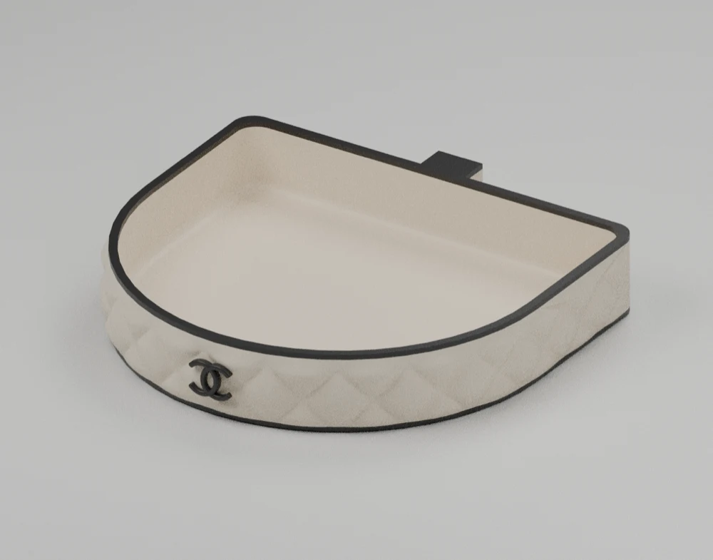
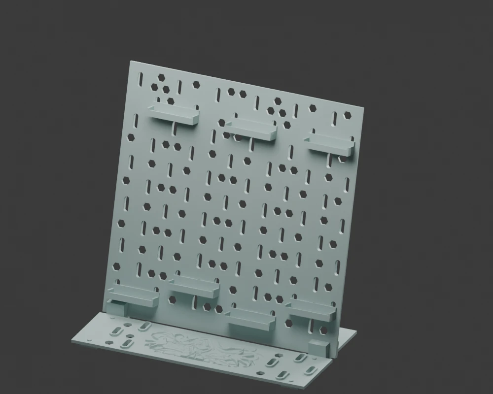
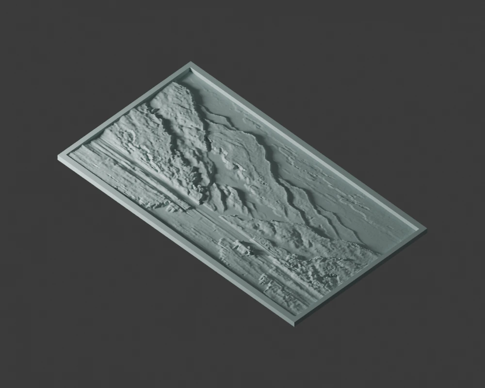
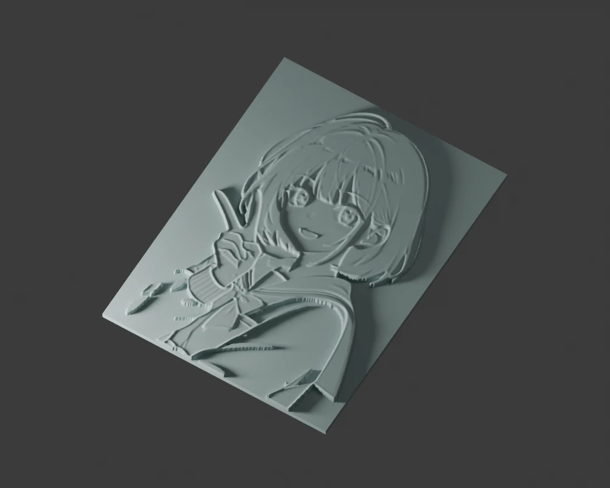
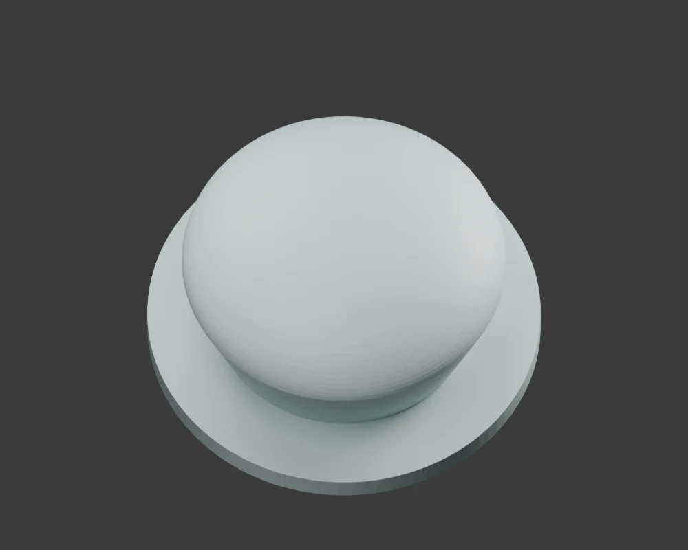
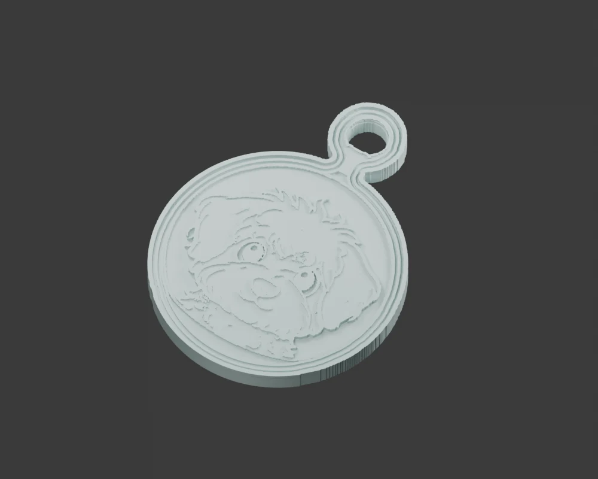
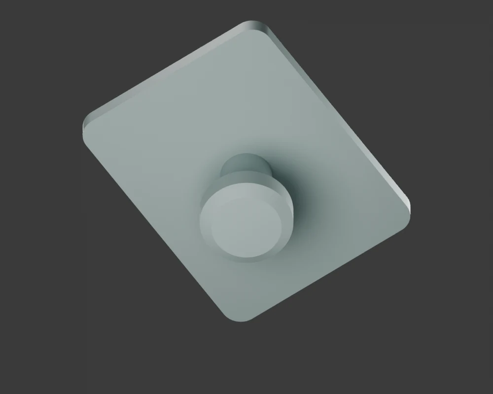

整体渲染
整体渲染
狗碗 · LV
两排花纹与独立装饰件
下载文件 2
- 碗与独立装饰 · STEP10.48 MB
- 用户打印工程 · 3MF1.65 MB
模型档案
整体模型优先，分件按需查看。
当前工程与几何文件。
整体渲染
两排花纹与独立装饰件

整体渲染绗缝表面与倒 T 接口

整体渲染模块化底板、托盘与接口

整体渲染以厚度变化呈现山水层次

整体渲染两个尺寸的实体浮雕

手柄预览印面与手柄分开制作

整体渲染双件工程与单件几何
洞洞板上的轻量托架

背面视角印章、铭牌与展示底座
没有匹配的模型。试试其他关键词。
云朵托架首图为已打印实物照片，其余标注为渲染的预览来自模型几何，颜色仅供示意。为保护个性化信息，部分模型仅展示背面、侧面或手柄；下载文件可能包含个性化刻字。
3MF 是工程文件，不代表已经完成切片或打印验收。STEP 导入层级、材料配置、装配间隙与承重，请在打印前自行核对。